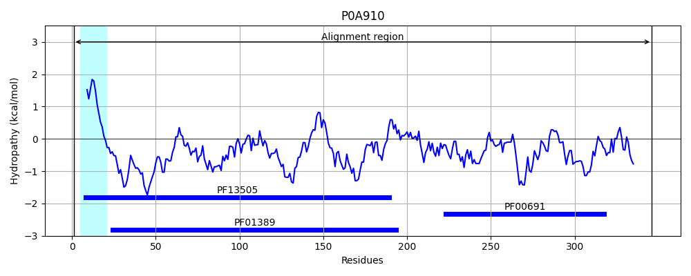
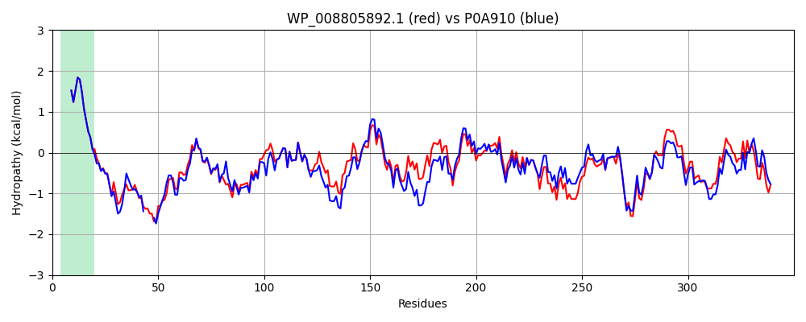

Hit Accession: P0A910
Hit TCID: 1.B.6.1.1
Hit Description: gnl|BL_ORD_ID|8622 gnl|TC-DB|P0A910|1.B.6.1.1 Outer membrane protein A - Escherichia coli.
Mach Len: 350
e:0.000000
Query TMS Count : 1
Hit TMS Count: 1
TMS-Overlap Score: 0.850000
Predicted Substrates:CHEBI:22563;anion, CHEBI:1366;resveratrol, CHEBI:7483;(S)-naringenin, CHEBI:8923;rutin
BLAST Alignment:
Score: 1597 , Bit scores: 619 bits, E-value: 0.0e+00, Alignment length: 350, Percentage identity: 85
Query: 1 MKKTAIAIAVALAGFATVAQAAPKDNTWYAGGKLGWSQFHDTGWYNSSLNNNGPTHESQLGAGAFGGYQVNPYLGFEMGYDWLGRMPYKGDQVNGAFKAQGVQLTAKLGYPITDDLDIYTRLGGMVWRADSSNSIAGDNHDTGVSPVFAGGVEWAVTRDIATRLEYQWVNNIGDAGTVGVRPDNGMLSVGVSYRFGQEDAAPVVAPAPAPAPEVTTKHFTLKSDVLFNFNKATLKPEGQQALDQLYTQLSNMDPKDGSAVVMGFTDRIGSEAYNQQLSEKRAQSVVDYLVAKGIPAGKISARGMGKSNPVTGNTCDNVKARAALIDCLAPDRRVEIEVKGYKEVVTQPAA 350
MKKTAIAIAVALAGFATVAQAAPKDNTWY G KLGWSQ+HDTG+ +NNNGPTHE+QLGAGAFGGYQVNPY+GFEMGYDWLGRMPYKG NGA+KAQGVQLTAKLGYPITDDLDIYTRLGGMVWRAD+ +++ G NHDTGVSPVFAGGVE+A+T +IATRLEYQW NNIGDA T+G RPDNGMLS+GVSYRFGQ +AAPVVAPAPAPAPEV TKHFTLKSDVLFNFNKATLKPEGQ ALDQLY+QLSN+DPKDGS VV+G+TDRIGS+AYNQ LSE+RAQSVVDYL++KGIPA KISARGMG+SNPVTGNTCDNVK RAALIDCLAPDRRVEIEVKG K+VVTQP A
Sbjct: 1 MKKTAIAIAVALAGFATVAQAAPKDNTWYTGAKLGWSQYHDTGF----INNNGPTHENQLGAGAFGGYQVNPYVGFEMGYDWLGRMPYKGSVENGAYKAQGVQLTAKLGYPITDDLDIYTRLGGMVWRADTKSNVYGKNHDTGVSPVFAGGVEYAITPEIATRLEYQWTNNIGDAHTIGTRPDNGMLSLGVSYRFGQGEAAPVVAPAPAPAPEVQTKHFTLKSDVLFNFNKATLKPEGQAALDQLYSQLSNLDPKDGSVVVLGYTDRIGSDAYNQGLSERRAQSVVDYLISKGIPADKISARGMGESNPVTGNTCDNVKQRAALIDCLAPDRRVEIEVKGIKDVVTQPQA 346 | Protein Hydropathy Plots: |
|---|
 |  |
Pairwise Alignment-Hydropathy Plot:
|
|---|
|  |